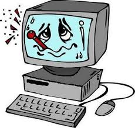

KEYLOGGER: è uno dei malware più pericolosi ed è differente dagli altri poichè può essere sia HW che SW: nel primo caso si installa tra tastiera e pc una componente simile ad un cavo e nascosti dalla tastiera stessa così da risultare invibili sia dall'utente che dal pc; nel secondo caso sono software che rimangono in esecuzione e captano ogni tasto che viene digitato, riferendono ad un server remoto. Le conseguenze sono facilmente intuibili, un malware di questo tipo può copiare password e informazioni importanti dell'utente, giungendo anche a danni economici per la vittima.
